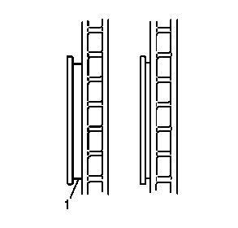

制动片的的检查
-

1.定期检查盘式制动器制动片，或在每次从车上拆下轮胎和车轮总成时进行检查。
- 2.如果需要更换，必须按车桥成套更换盘式制动器制动片。
- 3.检查盘式制动器制动片摩擦面的两个边缘(1)。通常盘式制动器制动片的后边缘磨损度最大。
- 4.检查盘式制动器制动片(1) 的厚度，确保制动片未过早磨损。同一车桥上的盘式制动器制动片的磨损度应大致相同。
- 5.检查并确认可能需要安装的盘式制动器制动片垫片已就位，且没有损坏或受到严重腐蚀。更换缺失或损坏的垫片，以保持盘式制动器的正常性能。
- 6.如果有任何盘式制动器制动片与安装板脱离，则更换盘式制动器制动片。
- 7.检查盘式制动器制动片的摩擦面是否开裂、破裂或损坏，从而导致噪声产生或降低了盘式制动器性能。